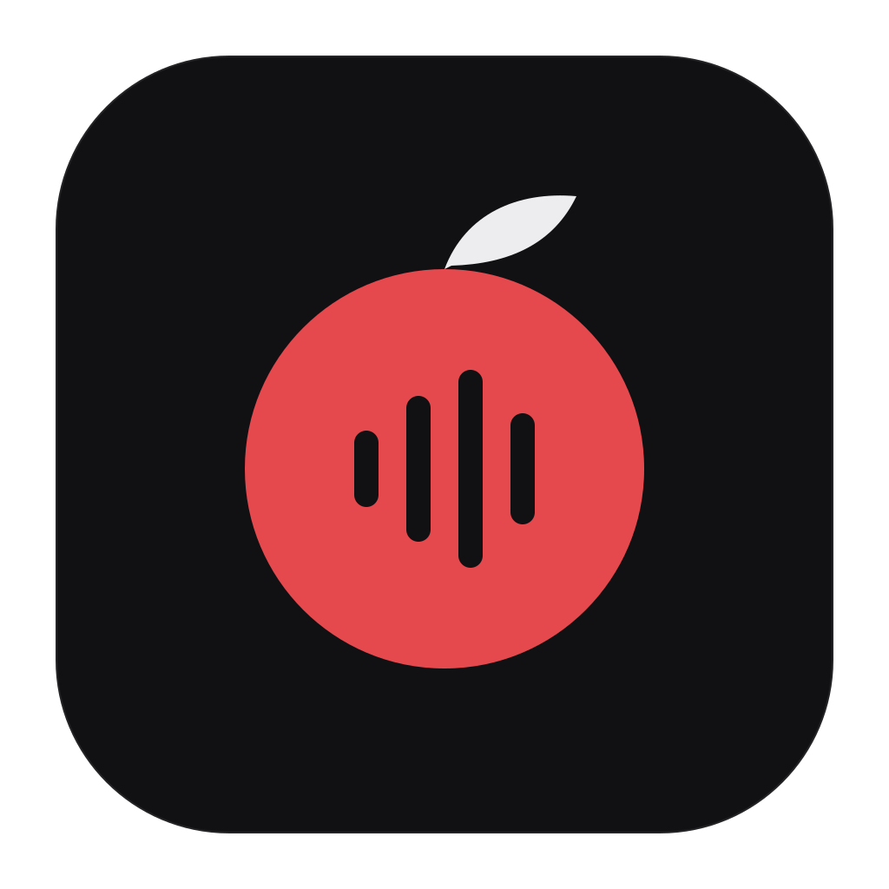
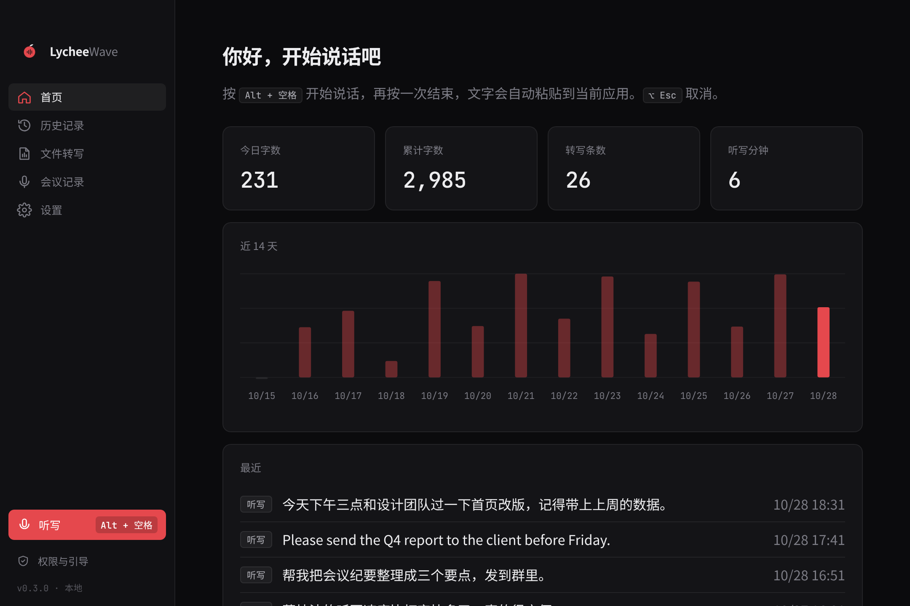
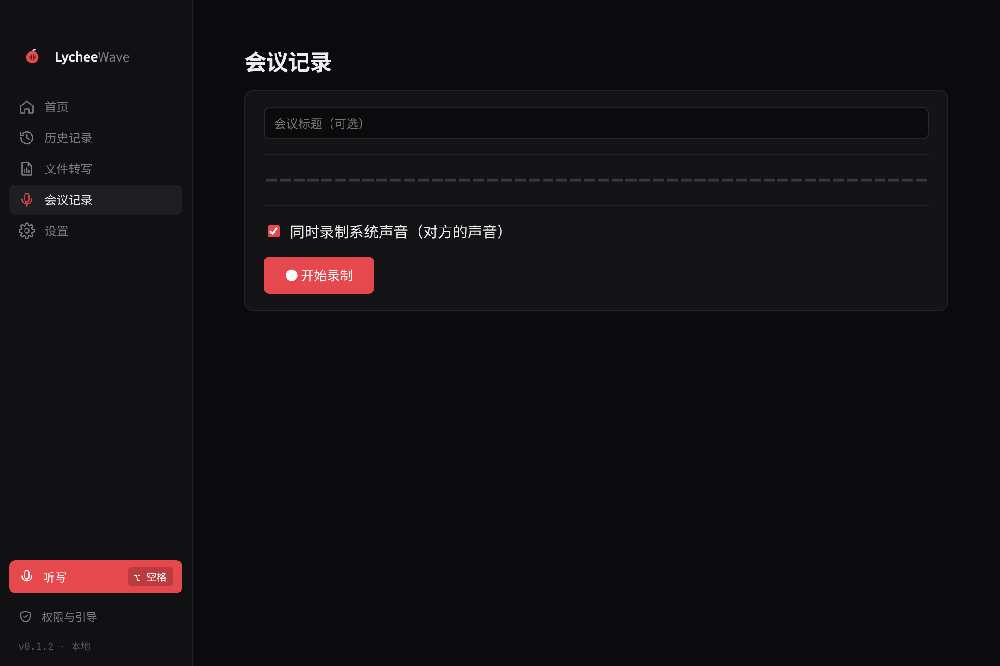
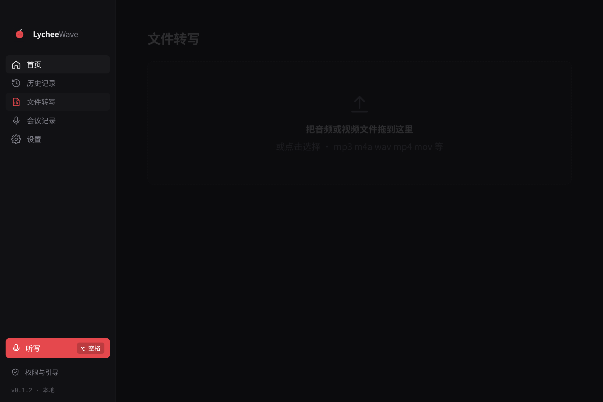

按住即说
在任何应用里按住快捷键说话，松开后文字自动粘贴到光标位置，剪贴板原样恢复。

LycheeWavev0.3.0 · 免费开源 · MIT
按住快捷键说话，松开后文字直接出现在光标处。转写完全在你的电脑上离线完成，音频从不上传。
其他版本： Mac Apple 芯片 · Mac Intel · Windows 安装版 · Windows 免安装版

在任何应用里按住快捷键说话，松开后文字自动粘贴到光标位置，剪贴板原样恢复。
拖入音频或视频文件，生成带时间戳的文本，可导出。
同时录制麦克风与系统声音，会后得到完整文字稿。
每一次转写都保存在本地，可搜索、复制、删除。


语音识别由内置的 whisper.cpp 模型在本机完成，断网也能用。可选的 AI 润色使用你自己的 OpenAI 兼容 API 密钥，密钥由系统钥匙串加密保存。
在“下载”文件夹里双击 LycheeWave 的 .dmg 文件。
把 LycheeWave 图标拖到 Applications 文件夹。
安装包尚未经 Apple 公证：在“应用程序”里右键点 LycheeWave，选“打开”，再在弹窗中点“打开”。只需这一次。
双击 setup.exe；或解压免安装版 zip，直接运行 LycheeWave.exe。
安装包尚未签名，如出现蓝色提示，点“更多信息”，再点“仍要运行”。
从开始菜单打开 LycheeWave，允许使用麦克风即可。
用来听见你说话。声音只在本机处理。
用于全局快捷键，以及把文字粘贴进其他应用。
文字会出现在当前光标处。首次启动时应用会一步步带你完成。
在 GitHub 提交 Issue，或查看校验文件确认下载完整。